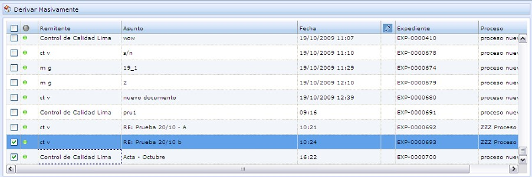
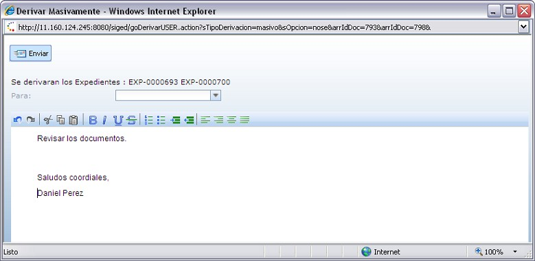

Derivar Masivamente
Esta opción es usada para enviar varios documentos a un determinado usuario. Para ello, debe seleccionar los documentos a derivar y hacer clic en el botón "Derivar Masivamente"
Figura 1 - GUI_SIGED_01
A continuación se muestra la siguiente ventana, donde deberá ingresar el nombre del usuario al cual se enviarán los expedientes, el rango de fechas para la revisión, el asunto y el motivo del envío. Para la redacción del texto, se muestra una barra de formato con las opciones de: Cortar, Copiar, Pegar, Negrita, Cursiva, Subrayado, Tachado, entre otras.

Para enviar los expedientes hacemos clic en el botón "Enviar".
SISTEMA DE GESTION DOCUMENTARIA - OSINERGMIN